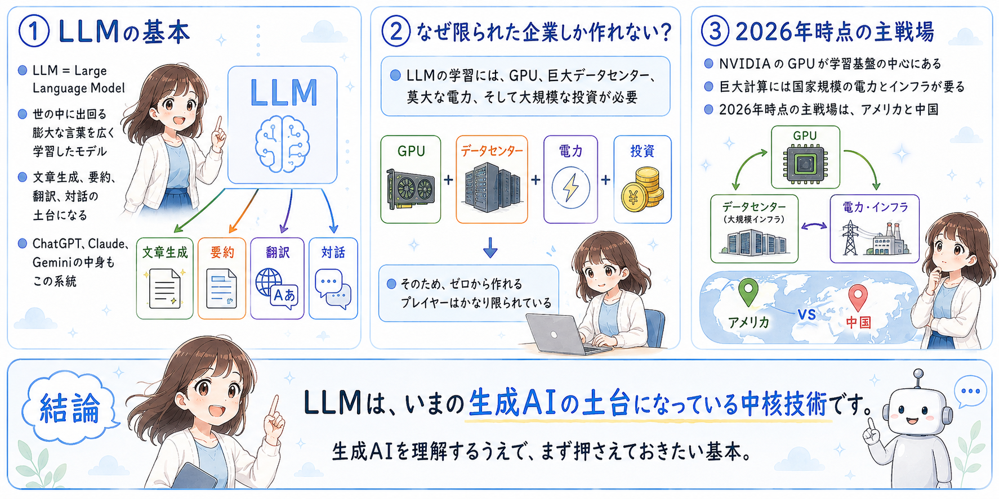
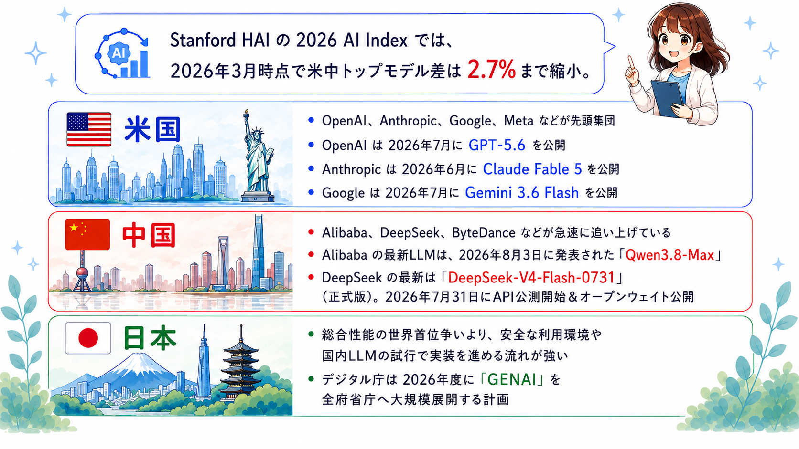
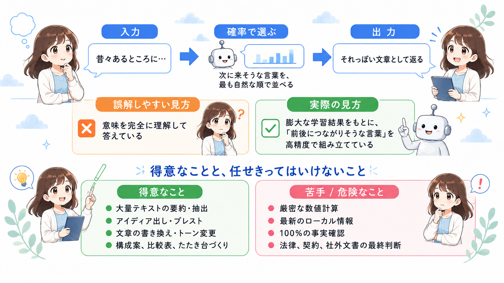
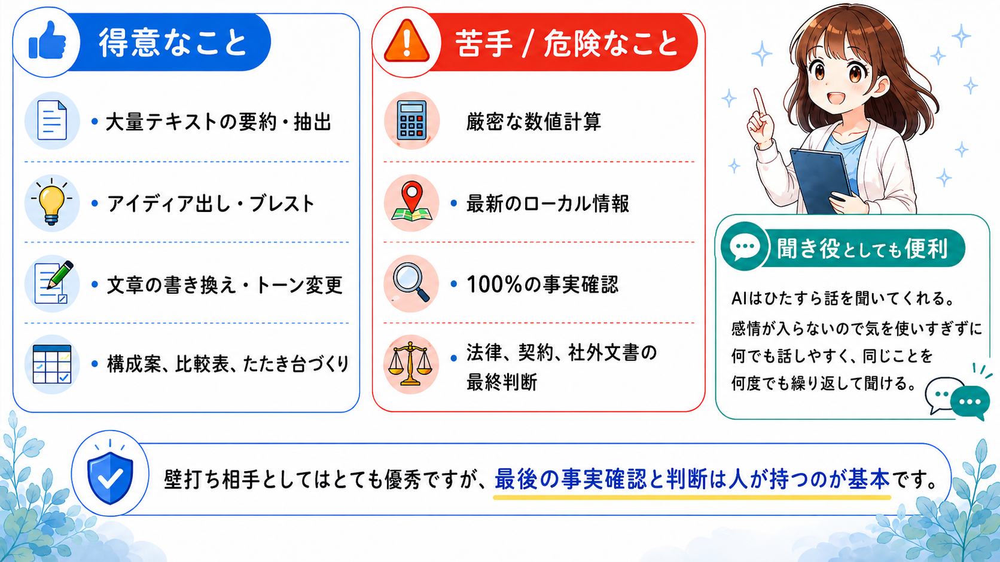
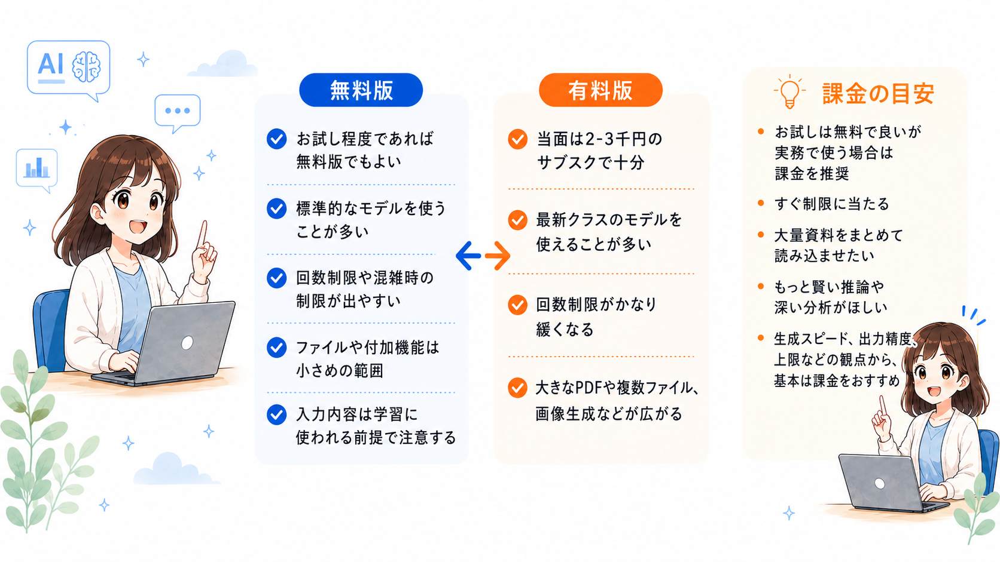
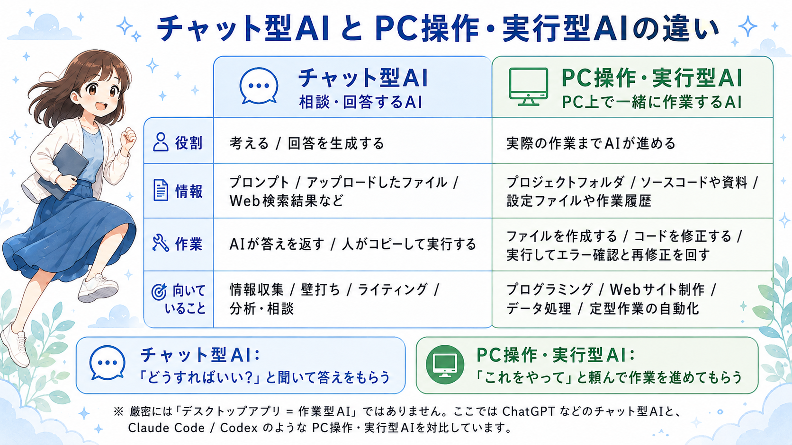
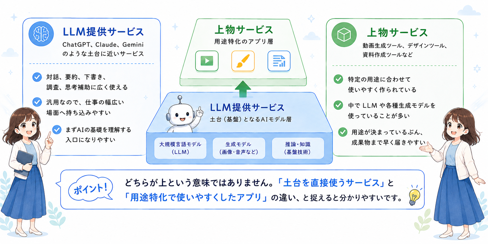
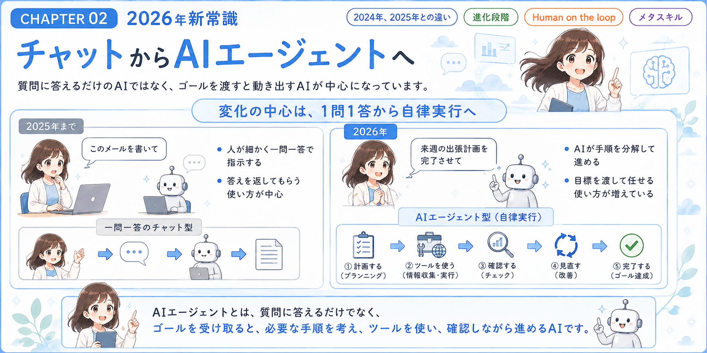
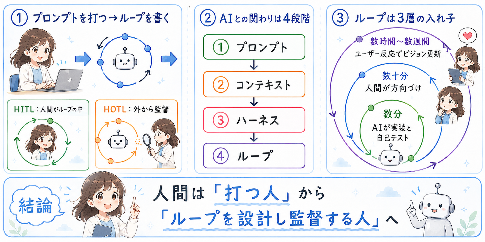
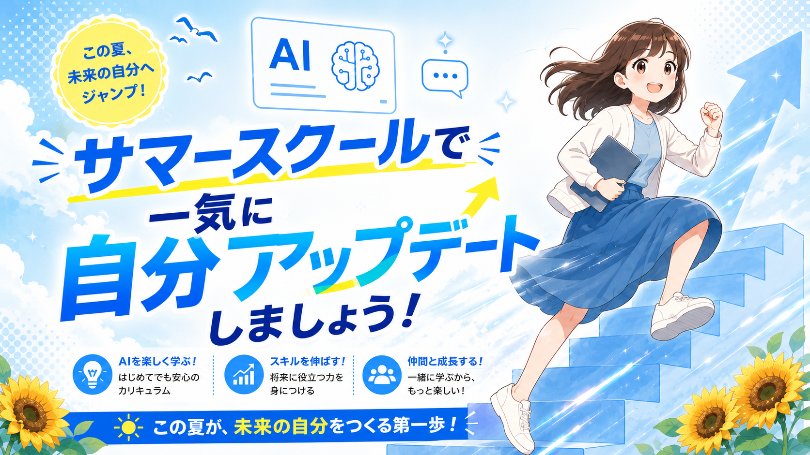

1
知っておきたい基礎知識
LLMの基礎から、モデル選び・課金・AIの使い分けまで押さえる
SLIDE OUTPUT
AIの歩き方 2026年8月最新版
1 / 32
AI SUMMER SCHOOL / AUGUST 2026
はじめに
AIのニュースは速いですが、すべてを追う必要はありません。 いちばん大事なのは、自分の仕事で使ってみて、「本当に楽になった」という小さな成功体験を作ることです。
追いかけなくていい
まず積み上げる
1回で完璧を目指すより、少しずつ良くするほうが実務では強いです。
LLMの基礎から、モデル選び・課金・AIの使い分けまで押さえる
チャットからAIエージェントへ、人の役割の変化までつかむ
5大リスクと安全対策
講座を組み合わせて、作れること・任せられることを広げる
基礎、変化、リスク、実践イメージまでを通して、AIを仕事の味方にする全体像をつかみます。
CHAPTER 01
1-1

1-2

1-2

1-3

1-4
たとえるなら、ラジオから対面打ち合わせへ進化したイメージです。
1-5
モデルも非常に賢くなっているので、どのモデルを使ってもある程度の仕事や実務はこなせます。 そのうえで、各モデルの特徴を自分で体験して把握し、どれが自分に合うかで選択すれば大丈夫です。
キビキビ派。テンポよく試して進めたい人向き。
深く考えて、丁寧に仕事を進めたい人向き。
Google Workspace や Google サービスをよく使う人向き。
迷ったら、まず1つ使ってみる。そのうえで「速さ」「深さ」「普段の業務環境」との相性で選ぶと失敗しにくいです。
料金プラン

使い方の違い

1-8

CHAPTER 02
2-1

2-2

2-3
Human in the loop
Human on the loop
速いループはAIが数分単位で回し、中くらいのループで人が方向修正し、長いループで利用者や現場の声を受けて方針を更新します。
2-4
AIと競争するより、AIを動かす側へ回る。実務ではこの見方のほうが、長く効く考え方になります。
CHAPTER 03
リスク1
2026年は、管理されていないAI利用や業務データ入力が大きなリスクとして見られています。 まずは「ネットに公開できない情報は、そのままAIに入れない」を徹底します。
安全ルール
リスク2
AIは、自信満々に間違える。だから「使わない」ではなく、「確認して使う」が基本です。
リスク3
注意したいこと
基本ルール
リスク4
起こること
基本ルール
AIが賢く見えても、外部から騙される可能性はあります。だからコードも指示も確認して使います。
リスク5
起こること
基本ルール
AIは「考えるだけのツール」から「行動するツール」へ。だから最後の承認は人間が持ちます。
CHAPTER 04
単発の講座として学ぶだけでなく、複数のAIスキルを組み合わせることで、実務で作れるものと任せられることが一気に広がります。
できること 01
1つのツールだけで完結させるより、調査・構成・見せ方をつなげると「実際に使える成果物」に変わりやすくなります。
できること 02
やりたいこと別 01
生成AI + NotebookLM + GAS
情報収集、資料整理、メール作成、集計を効率化し、毎日の仕事をAIで時短する。
NotebookLM + スライド + 画像生成
調査から構成、原稿、デザインまでつなげて、企画書やセミナー資料を自分で作る。
画像生成 + 動画生成 + AIマーケティング
SNS画像、動画、投稿企画、コピー制作まで回して、発信を継続しやすくする。
「どのAIが最強か」ではなく、「自分の仕事で何を作りたいか」から逆算すると選びやすくなります。
やりたいこと別 02
Google AI Studio + GAS
入力フォーム、集計ツール、業務支援ツールなど、欲しいツールを自分で作れる。
NotebookLM + AIエージェント + GAS
資料を調べる、判断する、処理する流れをつなげて、AIアシスタントやAIエージェントを作る。
HP制作 + AIエージェント + AIマーケティング
Webサイト、AI機能、集客導線まで組み合わせて、AIを使ったサービスを自分で形にする。
LAST MESSAGE
完璧な理解より、小さく試して経験値を積むことがいちばん大切です。
調査、資料作成、発信、自動化、エージェントを必要に応じてつなげていく。
方向づけと最終判断を人が持つことで、AIは右腕として強くなります。
情報に振り回されず、AIを自分の右腕として使いこなす。そのための最初の一歩を、今日ここから始めましょう。
